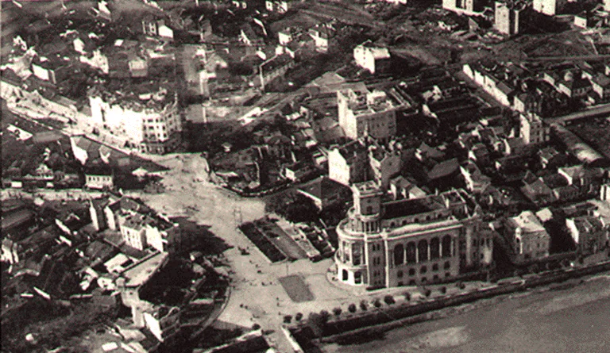
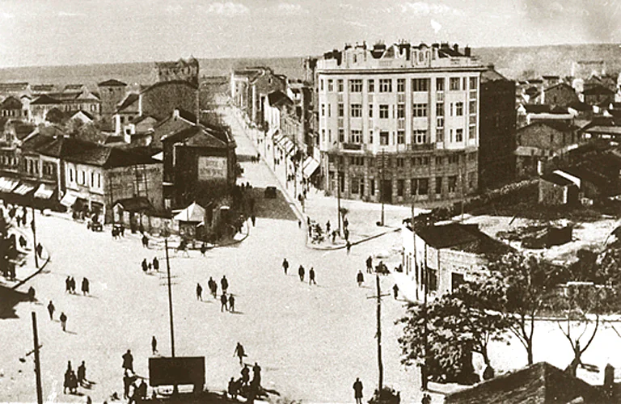
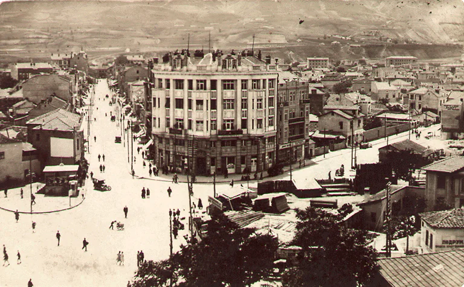
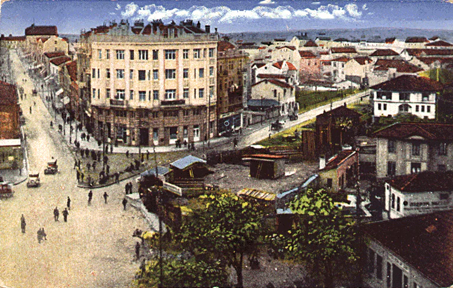
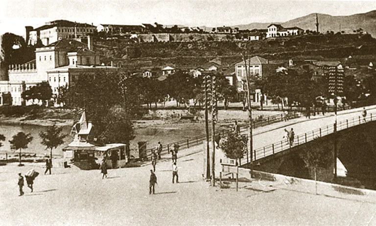
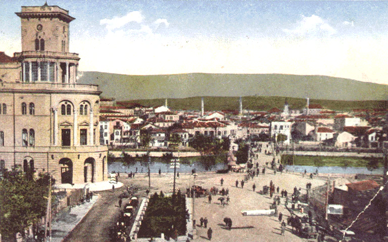
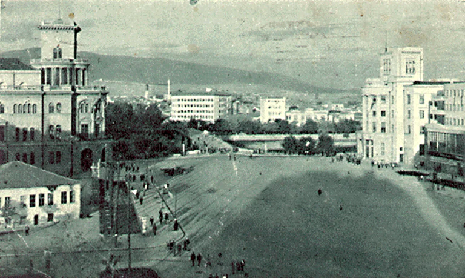
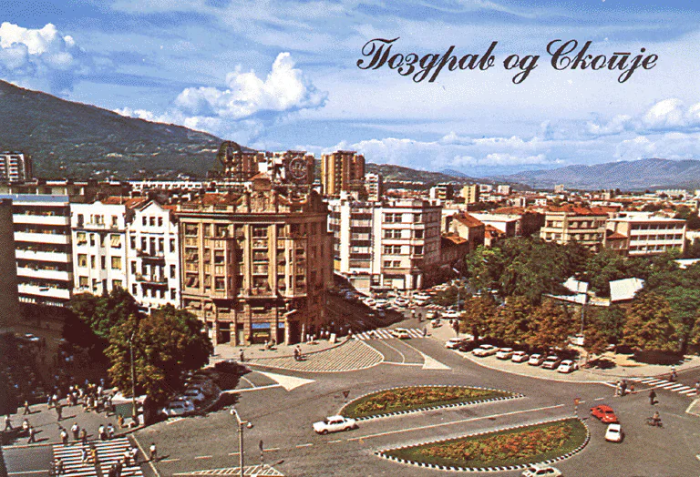

Празнување - плоштад
- Сценарио
- Ацо Петровски и Аки Павловски
- Режија
- Трајче Попов
- Снимател
- Киро Билбиловски и Трајче Попов
- Година
- 1949
- Должина
- 00:19

Плоштадот на град Скопје фотографиран околу средината на 19 век.

Скопје на крај на 19 век. Плоштадот со Бурмали џамија и неколку изградени објекти околу неа. Неоформена улица. Собиралиште на превезувачи на стока за трговија, со воловски запреги.

Плоштадот на крај на 19 век, почеток на 20 век. Во преден план е стојалиште на пајтони и запрежни коли. На десно се протегаат објектите, во два реда, кои биле пред самиот камен мост. Позади нив е Бурмали џамија. Лево од неа се изградени стамбени објекти, а веднаш позади нив се гледа дел од банката. Во позадина се извишува скопската тврдина - Кале со касарната.

Плоштадот на крај на 19 век, почеток на 20 век. Во преден план е стојалиште на пајтони и запрежни коли. На десно се протегаат објектите, во два реда, кои биле пред самиот камен мост. Во нив биле сместени трговски и занаетчиски дуќани. Лево од нив е Бурмали џамија. а до неа се изградени стамбени објекти. Во позадина се извишува скопската тврдина - Кале со касарната.

Скопје за време на Балканските војни. Бурмали џамија со стојалиште за пајтони. Десно од неа се гледаат двострано изградени објекти кои се наоѓале пред влезот на Камениот мост. Во нив биле сместени трговски дуќани и занаетчии. Во преден план се гледаат чистачи на чевли и присуство на војници. Улицата е оформена со отворени канали за атмосферска вода.

Дел од плоштадот пред Камениот мост (за време на Балканската војна). Се забележуваат некалдрмисани улици. Објектот од лево е еден од објектите кои биле дворедно изградени пред Камениот мост. Во нив се наоѓале трговски и занаетчиски дуќани. Околу 1920 година тие биле срушени.

Скопје, околу 1920 год. Дел од градскиот плоштад пред Камениот мост. Први киосци за попатен сервис и продажба. Киосците имаат нагласена архитектура во деталите т.е. обликувањето на покривите. Мостот е проширен со пешачки конзоли.

Скопје, околу 1920 год. Уреден градски плоштад, со урбани елементи, обѕидан зелен сквер, уредени калдрмисани површини, поплочени тротоари со ивичници. Нагласен приод кон Камениот мост со непречени визури кон реката и градската тврдина. Присутна раздвиженост на граѓани и пајтони како јавни превозни средства.

Скопје, околу 1920 год. Уреден градски плоштад, со урбани елементи, обѕидан зелен сквер, уредени калдрмисани површини, поплочени тротоари со ивичници. Нагласен приод кон Камениот мост со непречени визури кон реката и градската тврдина. Присутна раздвиженост на граѓани и пајтони како јавни превозни средства.

Скопје по Првата светска војна со почеток на уредувањето на градскиот плоштад. Срушени се објектите кои се наоѓале одзади Бурмали џамија, пред Камениот мост. Мостот е со нова ограда на пешачките конзоли. Во заден план се гледа дел од Пајко маало, на левата страна од р.Вардар.

Скопје веднаш по Првата светска војна. Градски плоштад пред изградбата на Ристиќева палата. Поглед на разбиена структура со традиционална архитектура. Право нагоре е главната улица која води до тогашната железничка станица. Лево полугоре е денешната улица "11 Октомври".

Скопје, 20-тите години. Градскиот плоштад од јужната страна со дел од Ристиќевата палата на десна страна. Лево е хотел "Сараево", хотел "Обединување" и кафеаната "Маргер". Развој на бројни објекти и трговски дуќани по главната улица.

Плоштадот, 20-тите години. Во преден план е пајтон стојалиште (пред Офицерскиот дом), а во позадината доминира објектот на апотекарот Ристиќ или популарно наречена Ристиќева палата.

Скопје околу 1930 година. Градскиот плоштад од јужната страна со Ристиќевата палата и дрварата во пред план. Развој на бројни објекти и трговски дуќани по главната улица.

Скопје, околу 1930 год. Дел од градскиот плоштад со Ристиќевата палата. Десно се гледа оградата на дрварата, каде се продавал градежен материјал.

Авионска снимка на плоштадот Македонија. (20-тите години)

Дел од плоштадот со Ристиќева палата (30-тите години)

Дел од плоштадот и Ристиќевата палата. Лево доле е поставена покриена платформа за војниот оркестар, кој свирел во неделите и празниците. Десно во далечината се гледа мелницата "Балкан". (30-тите години)

Скопје околу 1930 година. Градскиот плоштад со Ристиќевата палата и дрварата во пред план. Развој на бројни објекти и трговски дуќани по главната улица.

Скопје околу 1930 година. Градскиот плоштад од јужната страна по изградбата на Ристиќевата палата, со дрварата во пред план. Развој на бројни објекти и трговски дуќани по главната улица.

Скопје околу 1930 година. Дел од плоштадот од јужната страна, по изградбата на Ристиќевата палата, со дрварата во пред план и главната улица кон железничката станица со бројни објекти и трговски дуќани.

Дел од плоштадот, со Офицерскиот дом во позадина
- 20-тите години.

Плоштадот околу 1927 година. Јужниот приод кон Камениот мост. Одзади лево, се гледа Народниот театар и скопската тврдина - Кале.

Плоштадот околу 1927 година. Јужен приод кон Камениот мост. Во преден план е кинотерасата, на која во летниот период се прикажувале филмови.

Скопје, околу1925 год. Дел од градскиот плоштад пред Камениот мост. Први киосци за попатен сервис и продажба. Киосците имаат нагласена архитектура во деталите т.е. обликувањето на покривите. Мостот е проширен со пешачки конзоли. Во позадината лево, се гледа Народниот театар и скопската тврдина - Кале. Во преден план е рушење на кинотерасата, на чие место се изградила Народната банка.

Плоштадот околу 1926 година. Уреден градски плоштад, со урбани елементи, обѕидан зелен сквер, уредени калдрмисани површини, поплочени тротоари со ивичници. До зелениот сквер се наоѓало пајтон стојалиште, а веднаш до него и паркинг за моторни и такси возила. На десната страна се ресторани и хотели. Право е Камениот мост со дел од Еврејското и Пајко маало. Во левиот дел на фотографијата е Офицерскиот дом во изградба.

Плоштадот, втора половина на 20-тите година. Уреден градски плоштад, со урбани елементи, обѕидан зелен сквер, уредени калдрмисани површини, поплочени тротоари со ивичници. До зелениот сквер се наоѓало пајтон стојалиште. На десната страна се ресторани и хотели. Лево е Офицерскиот дом, кој е се уште во градба. Во позадина е Камениот мост со дел од Еврејското маало и Пајко маало.

Плоштадот на град Скопје - 20-тите години. Пред Офицерскиот дом, се наоѓала такси станица на моторни возила. Но, и пајтоните се уште постојат како превозно средство на граѓаните.

Плоштадот во целост - крај на 20-тите години. Пред Офицерскиот дом, се наоѓала такси станица на моторни возила. Но, и пајтоните се уште постојат како јавно превозно средство на граѓаните.

Плоштадот со хотелот "Сараево" и популарната кафана "Маргер", омилено место на граѓаните на Скопје. Лево од хотелот "Сараево" бил хотелот "Обединување". Во преден план, на тротоарот, седи продавач на гевреци. (околу 1935 година)

Плоштадот со хотелот "Сараево" и популарната кафеана "Маргер", која била омилено место на граѓаните на Скопје. Лево од хотелот "Сараево" бил хотелот "Обединување". На левата страна се гледа јужниот приод кон Камениот мост - 20-тите години.

Плоштадот со Народната банка, стопанската трговска комора во градба и дел од Пајко маало со Отоманската банка. Пред стопанската трговска комора се хотелите и кафеана "Маргер" (пред нивното уривање). (30-тите години)

Дел од плоштадот со спомениците кои се наоѓале на јужниот влез од Камениот мост. - 30-тите години

Дел од плоштадот кон Камениот мост. На влез на мостот, на два високи мермерни постаменти, се поставени два коњаника (изработени од вајарот Антун Аугустинчиќ). Исто така е изградена фонтана на плоштадот. На левата страна се гледа Народниот театар, скопската тврдина - Кале и дел од Еврејското маало. (околу 1930 година)

Дел од плоштадот со Народната банка и стопанската трговска комора. (30-тите години)

Плоштадот на град Скопје, 50-тите години со старата пошта во позадина, а на левата страна природонаучниот музеј.

Плоштадот, 50-тите години. Првата зграда од лево е зградата позната под името "Мацура". Во неа се наоѓала централната апотека и други продавници. Во позадина се гледаат: офицерскиот дом, народната банка и камениот мост. Во преден план, на местото на поранешната дрвара, е убаво уреден парк.

Плоштадот на град Скопје, 50-тите години со хотелот "Македонија" на левата страна.

Плоштадот во 50-тите години.

Плоштадот во 50-тите години.

Дел од плоштадот со Офицерскиот дом, а во позадина Народниот театар и скопската тврдина - Кале. (50-тите години)

Дел од плоштадот кон Камениот мост. Лево е Офицерскиот дом, а десно Народната банка и стопанската трговска комора. Автобуски градски превоз (едноспратни и двоспратни автобуси), со почетна и крајна станица на плоштадот. (50-тите години)

Плоштадот на град Скопје околу 1950 година. Од лево е Офицерскиот дом, а десно е Народната банка со стопанската трговска комора. Помеѓу нив е Камениот мост, а од другата страна се гледаат објектите на банките и Ибни Пајко.

Плоштадот - 50-тите години

Плоштадот, 70-тите години. Поглед кон Камениот мост, зградата "Ибни Пајко" и комплексот банки. Плоштадот, во тие години, се користел како паркинг простор.

Дел од плоштадот, 70-тите години, со Ристиќева палата и објектите по улицата "Гоце Делчев".

 Аквадукт4 разгледници
Аквадукт4 разгледници Кале30 разгледници
Кале30 разгледници Мостови60 разгледници
Мостови60 разгледници Кеј58 разгледници
Кеј58 разгледници Плоштад46 разгледници
Плоштад46 разгледници Објекти66 разгледници
Објекти66 разгледници Христијански храмови19 разгледници
Христијански храмови19 разгледници Муслимански објекти33 разгледници
Муслимански објекти33 разгледници Офицерски дом29 разгледници
Офицерски дом29 разгледници Театар28 разгледници
Театар28 разгледници Железничка станица13 разгледници
Железничка станица13 разгледници Училишта36 разгледници
Училишта36 разгледници Паркови12 разгледници
Паркови12 разгледници Пазари18 разгледници
Пазари18 разгледници Улици38 разгледници
Улици38 разгледници Панорама I60 разгледници
Панорама I60 разгледници Панорама II30 разгледници
Панорама II30 разгледници Колажи55 разгледници
Колажи55 разгледници Поплави9 разгледници
Поплави9 разгледници Земјотрес27 разгледници
Земјотрес27 разгледници Скопје 200026 разгледници
Скопје 200026 разгледници